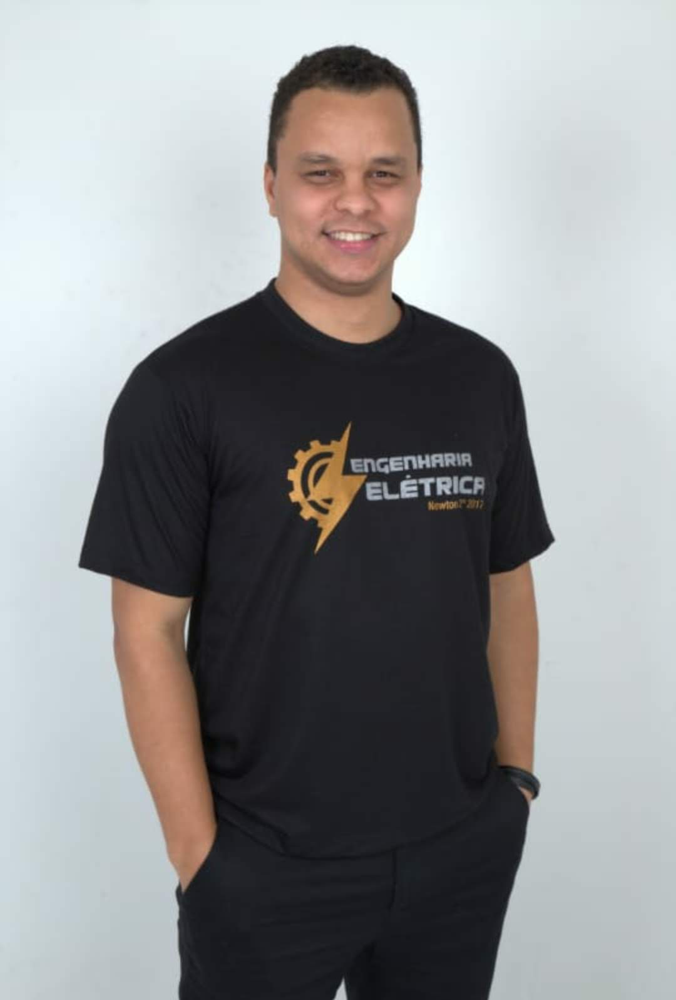

Um poco sobre mim...
Sou Brasileiro, natural de Sete Lagoas - Minas Gerais.
Sou estudante de Desenvolvimento de Software da Trybe.
O programa conta com mais de 1.500 horas de aulas presenciais e
online e aborda introdução ao desenvolvimento de software,
front-end, back-end, ciência da computação, engenharia de
software, metodologias ágeis e habilidades comportamentais.
Sou graduado em Engenharia Elétrica pela Newton Paiva e no estágio
desta graduação adquiri conhecimento nas principais rotinas que
envolvem área tecnológica, onde me apaixonei e pretendo seguir carreira.
Eu gosto de...
- Programar
- Tecnologia em geral
- Séries/filmes/animes/mángas
- Estar com minha família
- Viajar, claro!
- Barzinho e vários encontros com amigos.
Linkedin Júnio Melo
Github